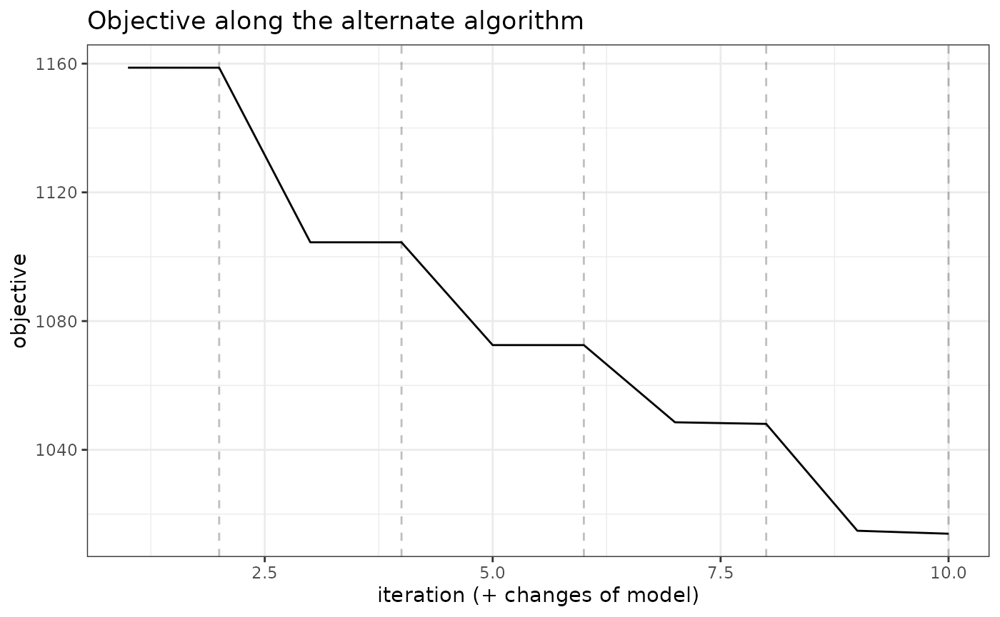
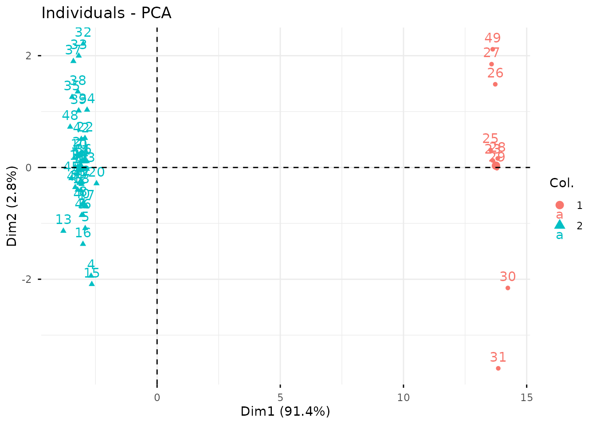

Clustering of multivariate count data with PLN-mixture
PLN team
2025-07-10
Source:vignettes/PLNmixture.Rmd
PLNmixture.RmdPreliminaries
This vignette illustrates the standard use of the
PLNmixture function and the methods accompanying the R6
Classes PLNmixturefamily and
PLNmixturefit.
Requirements
The packages required for the analysis are PLNmodels plus some others for data manipulation and representation:
The main function PLNmixture integrates some features of
the future package to perform parallel computing: you
can set your plan to speed the fit by relying on 2 workers as
follows:
Data set
We illustrate our point with the trichoptera data set, a full description of which can be found in the corresponding vignette. Data preparation is also detailed in the specific vignette.
data(trichoptera)
trichoptera <- prepare_data(trichoptera$Abundance, trichoptera$Covariate)The trichoptera data frame stores a matrix of counts
(trichoptera$Abundance), a matrix of offsets
(trichoptera$Offset) and some vectors of covariates
(trichoptera$Wind, trichoptera$Temperature,
etc.)
Mathematical background
PLN-mixture for multivariate count data is a variant of the Poisson Lognormal model of Aitchison and Ho (1989) (see the PLN vignette as a reminder) which can be viewed as a PLN model with an additional mixture layer in the model: the latent observations found in the first layer are assumed to be drawn from a mixture of multivariate Gaussian components. Each component has a prior probability such that . We denote by the multinomial variable describing the component to which observation belongs to. Introducing this additional layer, our PLN mixture model is as follows
Covariates and offsets
Just like PLN, PLN-mixture generalizes to a formulation where the main effect is due to a linear combination of covariates and to a vector of offsets in sample in each mixture component. The latent layer then reads
where is a matrix of regression parameters common to all the mixture components.
Parametrization of the covariance of the mixture models
When using parametric mixture models like Gaussian mixture models, it is generally not recommended to have covariances matrices with no special restriction, especially when dealing with a large number of variables. Indeed, the total number of parameters to estimate in such unrestricted model can become prohibitive.
To reduce the computational burden and avoid over-fitting the data,
two different, more constrained parametrizations of the covariance
matrices of each component are currently implemented in the
PLNmodels package (on top of the general form of
):
The diagonal structure assumes that, given the group membership of a site, all variable abundances are independent. The spherical structure further assumes that all species have the same biological variability. In particular, in both parametrisations, all observed covariations are caused only by the group structure.
For readers familiar with the mclust R
package (Fraley and
Raftery 1999), which implements Gaussian mixture models with
many variants of covariance matrices of each component, the spherical
model corresponds to VII (spherical, unequal volume) and
the diagonal model to VVI (diagonal, varying volume and
shape). {Using constrained forms of the covariance matrices enables}
PLN-mixture to {provide a clustering} even when the number of sites
remains of the same order, or smaller, than the number of species
.
Optimization by Variational inference
Just like with all models fitted in PLNmodels, we adopt a variational strategy to approximate the log-likelihood function and optimize the consecutive variational surrogate of the log-likelihood with a gradient-ascent-based approach. In this case, it is not too difficult to show that PLN-mixture can be obtained by optimizing a collection of weighted standard PLN models.
Analysis of trichoptera data with a PLN-mixture model
In the package, the PLN-mixture model is adjusted with the function
PLNmixture, which we review in this section. This function
adjusts the model for a series of value of
and provides a collection of objects PLNmixturefit stored
in an object with class PLNmixturefamily.
The class PLNmixturefit contains a collection of
components constituting the mixture, each of whom inherits from the
class PLNfit, so we strongly recommend the reader to be
comfortable with PLN and PLNfit before using
PLNmixture (see the PLN
vignette).
A mixture model with a latent main effects for the Trichoptera data set
Adjusting a collection of fits
We fit a collection of models with one iteration of forward smoothing of the log-likelihood as follows:
mixture_models <- PLNmixture(
Abundance ~ 1 + offset(log(Offset)),
data = trichoptera,
clusters = 1:4
)##
## Initialization...
##
## Adjusting 4 PLN mixture models.
## number of cluster = 1 number of cluster = 2 number of cluster = 3 number of cluster = 4
##
## Smoothing PLN mixture models.
## Going backward +++ Going forward +++
## Post-treatments
## DONE!Note the use of the formula object to specify the model,
similar to the one used in the function PLN.
Structure of PLNmixturefamily
The mixture_models variable is an R6 object
with class PLNmixturefamily, which comes with a couple of
methods. The most basic is the show/print method, which
outputs a brief summary of the estimation process:
mixture_models## --------------------------------------------------------
## COLLECTION OF 4 POISSON LOGNORMAL MODELS
## --------------------------------------------------------
## Task: Mixture Model
## ========================================================
## - Number of clusters considered: from 1 to 4
## - Best model (regarding BIC): cluster = 2
## - Best model (regarding ICL): cluster = 4One can also easily access the successive values of the criteria in the collection
| param | nb_param | loglik | BIC | ICL |
|---|---|---|---|---|
| 1 | 18 | -1158.510 | -1193.536 | -2152.473 |
| 2 | 37 | -1104.275 | -1176.274 | -1982.181 |
| 3 | 56 | -1070.275 | -1179.246 | -1887.746 |
| 4 | 75 | -1041.142 | -1187.085 | -1790.797 |
A quick diagnostic of the optimization process is available via the
convergence field:
| param | nb_param | objective | convergence | outer_iterations | |
|---|---|---|---|---|---|
| out | 1 | 18 | 1158.51 | 1.267482e-06 | 2 |
| elt | 2 | 37 | 1104.275 | 2.125086e-06 | 2 |
| elt.1 | 3 | 56 | 1070.275 | 5.373082e-07 | 2 |
| elt.2 | 4 | 75 | 1041.142 | 3.861067e-07 | 2 |
A visual representation of the optimization can be obtained be representing the objective function
mixture_models$plot_objective()
Comprehensive information about PLNmixturefamily is
available via ?PLNmixturefamily.
Model selection
The plot method of PLNmixturefamily
displays evolution of the criteria mentioned above, and is a good
starting point for model selection:
plot(mixture_models)
Note that we use the original definition of the BIC/ICL criterion
(),
which is on the same scale as the log-likelihood. A popular
alternative consists in using
instead. You can do so by specifying reverse = TRUE:
plot(mixture_models, reverse = TRUE)
From those plots, we can see that the best model in terms of BIC is
obtained for a number of clusters of 2. We may extract the corresponding
model with the method getBestModel(). A model with a
specific number of clusters can also be extracted with the
getModel() method:
myMix_BIC <- getBestModel(mixture_models, "BIC")
myMix_2 <- getModel(mixture_models, 2)Structure of PLNmixturefit
Object myMix_BIC is an R6Class object with
class PLNmixturefit which in turns has a couple of methods.
A good place to start is the show/print method:
myMix_BIC## Poisson Lognormal mixture model with 2 components and spherical covariances.
## * Useful fields
## $posteriorProb, $memberships, $mixtureParam, $group_means
## $model_par, $latent, $latent_pos, $optim_par
## $loglik, $BIC, $ICL, $loglik_vec, $nb_param, $criteria
## $component[[i]] (a PLNfit with associated methods and fields)
## * Useful S3 methods
## print(), coef(), sigma(), fitted(), predict()Specific fields
The user can easily access several fields of the
PLNmixturefit object using active binding or
S3 methods:
- the vector of group memberships:
myMix_BIC$memberships## [1] 2 2 2 2 2 2 2 2 2 2 2 2 2 2 2 2 2 2 2 2 2 2 1 2 1 1 1 1 1 1 1 2 2 2 2 2 2 2
## [39] 2 2 2 2 2 2 2 2 2 2 1- the group proportions:
myMix_BIC$mixtureParam## [1] 0.1836735 0.8163265- the posterior probabilities (often close to the boundaries ):
| 0 | 1 |
| 0 | 1 |
| 0 | 1 |
| 0 | 1 |
| 0 | 1 |
| 0 | 1 |
- a list of covariance matrices (here spherical variances):
## [[1]]
## Che Hyc Hym Hys Psy Aga Glo Ath
## 0.962438 0.962438 0.962438 0.962438 0.962438 0.962438 0.962438 0.962438
## Cea Ced Set All Han Hfo Hsp Hve
## 0.962438 0.962438 0.962438 0.962438 0.962438 0.962438 0.962438 0.962438
## Sta
## 0.962438
##
## [[2]]
## Che Hyc Hym Hys Psy Aga Glo Ath
## 0.7187567 0.7187567 0.7187567 0.7187567 0.7187567 0.7187567 0.7187567 0.7187567
## Cea Ced Set All Han Hfo Hsp Hve
## 0.7187567 0.7187567 0.7187567 0.7187567 0.7187567 0.7187567 0.7187567 0.7187567
## Sta
## 0.7187567- the regression coefficient matrix and other model of parameters (results not shown here, redundant with other fields)
coef(myMix_BIC, 'main') # equivalent to myMix_BIC$model_par$Theta
coef(myMix_BIC, 'mixture') # equivalent to myMix_BIC$model_par$Pi, myMix_BIC$mixtureParam
coef(myMix_BIC, 'means') # equivalent to myMix_BIC$model_par$Mu, myMix_BIC$group_means
coef(myMix_BIC, 'covariance') # equivalent to myMix_BIC$model_par$Sigma, sigma(myMix_BIC)- the matrix of group means
| Intercept | Intercept.1 | |
|---|---|---|
| Che | -22.14 | -7.16 |
| Hyc | -7.71 | -8.33 |
| Hym | -4.87 | -2.68 |
| Hys | -8.40 | -6.59 |
| Psy | -0.81 | -0.53 |
| Aga | -6.97 | -3.72 |
In turn, each component of a PLNmixturefit is a
PLNfit object (see the corresponding vignette)
myMix_BIC$components[[1]]## A multivariate Poisson Lognormal fit with spherical covariance model.
## ==================================================================
## nb_param loglik BIC AIC ICL
## 18 -252.7 -287.726 -270.7 167.536
## ==================================================================
## * Useful fields
## $model_par, $latent, $latent_pos, $var_par, $optim_par
## $loglik, $BIC, $ICL, $loglik_vec, $nb_param, $criteria
## * Useful S3 methods
## print(), coef(), sigma(), vcov(), fitted()
## predict(), predict_cond(), standard_error()The PLNmixturefit class also benefits from two important
methods: plot and predict.
plot method
We can visualize the clustered latent position by performing a PCA on the latent layer:
plot(myMix_BIC, "pca")
We can also plot the data matrix with samples reordered by clusters to check whether it exhibits strong pattern or not. The limits between clusters are highlighted by grey lines.
plot(myMix_BIC, "matrix")
predict method
For PLNmixture, the goal of predict is to predict the
membership based on observed newly species counts.
By default, the predict use the argument
type = "posterior" to output the matrix of posterior
probabilities
predicted.class <- predict(myMix_BIC, newdata = trichoptera)
## equivalent to
## predicted.class <- predict(myMIX_BIC, newdata = trichoptera, type = "posterior")
predicted.class %>% head() %>% knitr::kable(digits = 2)| 0 | 1 |
| 0 | 1 |
| 0 | 1 |
| 0 | 1 |
| 0 | 1 |
| 0 | 1 |
Setting type = "response", we can predict the most
likely cluster
instead:
predicted.class <- predict(myMix_BIC, newdata = trichoptera,
prior = myMix_BIC$posteriorProb, type = "response")
predicted.class## 1 2 3 4 5 6 7 8 9 10 11 12 13 14 15 16 17 18 19 20 21 22 23 24 25 26
## 2 2 2 2 2 2 2 2 2 2 2 2 2 2 2 2 2 2 2 2 2 2 1 2 1 1
## 27 28 29 30 31 32 33 34 35 36 37 38 39 40 41 42 43 44 45 46 47 48 49
## 1 1 1 1 1 2 2 2 2 2 2 2 2 2 2 2 2 2 2 2 2 2 1
## Levels: 1 2We can assess that the predictions are quite similar to the real group (this is not a proper validation of the method as we used data set for both model fitting and prediction and are thus at risk of overfitting).
Finally, we can get the coordinates of the new data on the same graph
at the original ones with type = "position". This is done
by averaging the latent positions
(found when the sample is assumed to come from group
)
and weighting them with the
.
Some samples, have compositions that put them very far from their group
mean.
predicted.position <- predict(myMix_BIC, newdata = trichoptera,
prior = myMix_BIC$posteriorProb, type = "position")
prcomp(predicted.position) %>%
factoextra::fviz_pca_ind(col.ind = predicted.class)
When you are done, do not forget to get back to the standard sequential plan with future.
future::plan("sequential")